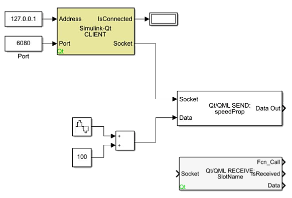
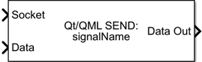
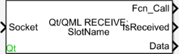
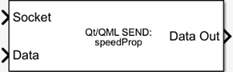
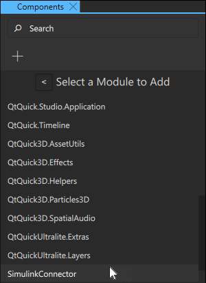
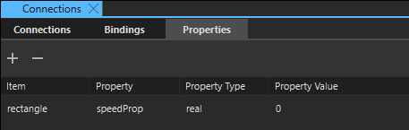
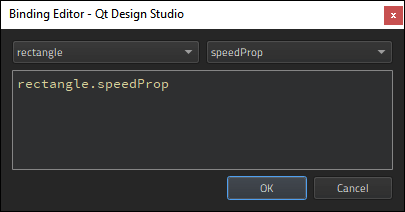

Simulating Dynamic Systems
Use the Simulink connector to connect simulation to your UI. Simulink is a MATLAB-based graphical programming environment for modeling, simulating, and analyzing multi-domain dynamic systems. On Windows, Qt Design Studio provides built-in support for connectivity to Simulink models, which allows them to send and receive data with applications developed using Qt Design Studio. Install Simulink on your computer and run it simultaneously with Qt Design Studio to enable communication between the applications.
The information given here is mainly focused on the integration of the Simulink connector in Qt Design Studio. For information on how to use the Simulink environment, see the documentation provided by MathWorks.
The Qt Blockset for Simulink
Install the Simulink Qt Blockset to your computer in order to connect a Simulink model to your application. The Qt Blockset installer adds the Simulink blocks needed to establish connectivity to your application. After installation, the SLQTLibrary blockset will be added to the Simulink blocks library. The blocks allow sending and receiving of Property, Signal, and Slot updates with your application. The Qt Blockset includes the Simulink-Qt Client, Address, Qt/QML Send, and Qt/QML Receive blocks.

Simulink-Qt Client
A Simulink-Qt Client block establishes the TCP/IP Client connection with your application. The block has two inputs and two outputs:
- The Address input specifies the machine IP address of the server to the client block. To ensure the address is formatted correctly, use the Address block.
- The Port input specifies the port value for the IP address, which can be determined by using the Port block or a valid Simulink integer value.
- The IsConnected output is a Boolean signal. When true, specifies the connection to the server has been established.
- The Socket output sends a signal that presents the socket ID of the connection. This signal needs to be delivered to corresponding Qt/QML Receive and Qt/QML Send blocks.
Address and Port
An Address block delivers the IP address of a server to the Simulink-Qt Client block as a typical IP address string. A Port block determines the port value for the IP address. For simulations where the Simulink model and your application are run on the same machine, use the IP address 127.0.0.1 and any port available.
Qt/QML Send

A Qt/QML Send block sends a Signal or Property value change from Simulink. It is used for each property that Simulink needs to send to your application. The property name of the block needs to correspond to the name of the property or slot in your application.
The block has two inputs and one output:
- The Socket input receives the socket signal from the Simulink-Qt Client block.
- The Data input receives the data to be sent as a Signal or Property update.
- The Data Out output outputs the passed-through data to connect it to other Simulink blocks if needed.
Qt/QML Receive

A Qt/QML Receive block receives Signal or Property value changes from your application. It is used for each property that Simulink needs to receive from your application. The property name of the block needs to correspond to the name of the property or slot in your application.
The block has one input and two outputs:
- The Socket input receives the socket signal from the Simulink-Qt Client block.
- The Fcn_Call output sends the function-call, which can either be terminated if idle, or connected to a valid function call subsystem.
- The isReceived output emits a scalar Boolean signal suggesting that a valid Signal or Property update was acquired from the connection.
- The Data output signals data payload from a Signal or Property value.
Specifying Property Names in Simulink
Double-click the Qt/SML Send or Qt/QML Receive block in Simulink to specify a property name. A pop-up for Block Parameters appears. Type the name of the property in the Qt Signal/Property Name field and click OK. The name, for example speedProp, needs to match a signal or a property in Qt Design Studio.

Integrating the Simulink Model to Qt Design Studio
Importing the Simulink Connector
To integrate the Simulink model into Qt Design Studio, you first need to add the Simulink connector module to your project. In the Components view, select  > SimulinkConnector. Qt Design Studio is now ready to communicate with the Simulink model.
> SimulinkConnector. Qt Design Studio is now ready to communicate with the Simulink model.

If you need to change the IP address and/or port, you need to select the SimulinkConnector item in Navigator and set the IP address and/or port in the Properties view. If you cannot see SimulinkConnector in Navigator, you need to click  (Filter Tree) and unselect Show only visible items.
(Filter Tree) and unselect Show only visible items.
To communicate with a specific model in Simulink, you need to create properties matching the send and receive properties in the root of the application you are building. Select the root item in Navigator to add the properties on the Properties tab in the Connections view.
See Specifying Custom Properties for a detailed description of how to add a custom property. The name of the property and the data type need to match those of the send or receive property of the Simulink model.

Creating Bindings
Next, you need to bind the value of the property you just created to the desired properties of UI components.
By binding the root item property to a component property you can use it, for example, to rotate an component. Binding a root item property of speed to a component property of rotation would result in the item rotating in the screen when the simulation is run.
To bind the root item property to a component property, select the component either by clicking on it on the canvas or in Navigator. In the Properties view, find the component property to which you want to bind the root item property. Select the  (Actions) menu next to a property, and then select Set Binding. In the Binding Editor, select the text field and type in
(Actions) menu next to a property, and then select Set Binding. In the Binding Editor, select the text field and type in <id>.<property name>, for example rectangle.speedProp. For more information, see Setting Bindings.

Run the simulation by first clicking the Run icon in Qt Design Studio and then the Run icon in Simulink.